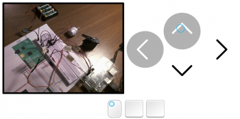

About a month and a half ago I planned to build a Raspberry Pi controlled car. The idea was to control it through WiFi with live video feedback. Unfortunately the car won’t be built due to lack of money and time, etc.
However I gathered a little experience during this “project”, so I’m sharing it through a guide on how to put together all the necessary hardware and software parts together. First, though, here are the main weaknesses of my setup:
- The live video feed takes about 30–50% the Pi’s CPU, depens on motion.
- High lag (up to 2 seconds).
- Jittery software PWM.
In sum, this guide shows how to control a DC and a servo motor with live video feedback, but the end result will be slow and imprecise.
Hardware
I planned to use two motors for the car, a DC motor for driving and a servo motor for steering. I followed The Adafruit Learning System’s guides for controlling a DC and a servo motors using the Raspberry Pi, so I won’t go into the details of the hardware setup and PWM signaling.
I combined the circuit diagrams of the two guides into one using Fritzing. You can download the Fritzing format of the diagram, it’s included in the downloadable tarball (doc directory) towards the end of the post.

Software
The idea was to control the car through a simple webpage with embedded live video. This had set the course which led me to use the following software setup.

Note: As for the OS I stayed with Raspbian, and since I didn’t have a camera board I used a webcam.
Necessary packages
First let’s install the necessary packages.
$ sudo apt-get install subversion libjpeg8-dev imagemagick python-rpi.gpio lighttpd
Subversion will be needed to checkout MJPG-Streamer’s source from SourceForge, while ImageMagick and libjpeg8-dev are needed for building MJPG-Streamer. RPi.GPIO is a Python package which we’ll use to control the GPIO pins, and lighttpd will serve the web page to the client.
MJPG-Streamer
Now we’ll checkout MJPG-Streamer’s source from SourceForge, enter the proper directory, modify the Makefile, and build MJPG-Streamer.
$ svn co https://mjpg-streamer.svn.sourceforge.net/svnroot/mjpg-streamer mjpg-streamer
$ cd mjpg-streamer/mjpg-streamer
$ sed -i 's/$(CC) $(CFLAGS) $(LFLAGS) $(OBJECTS) -o $(APP_BINARY)/$(CC) $(CFLAGS) $(OBJECTS) $(LFLAGS) -o $(APP_BINARY)/g' Makefile
$ make
If MJPG-Streamer was built successfully, edit your /etc/rc.local file.
$ sudo nano /etc/rc.local
Add the following lines right before the exit 0 statement. This command will launch MJPG-Streamer at system startup.
|
1
2
3
4
5
6
|
# Start MJPG-Streamer on multiuser runlevels
/home/pi/mjpg-streamer/mjpg-streamer/mjpg_streamer \
-i "/home/pi/mjpg-streamer/mjpg-streamer/input_uvc.so \
-f 30 \
-r 640x480" \
-o "/home/pi/mjpg-streamer/mjpg-streamer/output_http.so"
|
Lighttpd
Edit lighttpd’s config file.
$ sudo nano /etc/lighttpd/lighttpd.conf
Make sure that lighttpd’s document root is the /var/www directory.
server.document-root = "/var/www"
Add the following lines to the end of the file. These will load the CGI module, create an error log at /var/log/lighttpd/breakage.log, run Python scripts with a “custom” binary, and map the /usr/lib/cgi-bin/ directory to the document root as cgi-bin/.
server.modules += ( "mod_cgi" )
server.breakagelog = "/var/log/lighttpd/breakage.log"
cgi.assign = ( ".py" => "/usr/bin/python-root" )
alias.url = ( "/cgi-bin/" => "/usr/lib/cgi-bin/" )
Make lighttpd start on system startup, and restart lighttpd to use the updated configuration.
$ sudo update-rc.d lighttpd defaults
$ sudo service lighttpd restart
Nasty Python hack
I was using RPi.GPIO version 0.5.3a for controlling the GPIO pins and at the moment RPi.GPIO needs root permission to do this. So I needed to run the Python scripts as root, but since lighttpd can not be run as root – which would be a sechole – I needed to hack a little bit.
I found the solution in Dav’s Raspberry Pi – Controlling GPIO from the Web post: I made a copy of Python’s executable and gave it the setuid attribute.
$ sudo cp /usr/bin/python2.7 /usr/bin/python-root
$ sudo chmod u+s /usr/bin/python-root
Note: All Python scripts executed by lighttpd will now run as root. DO NOT USE THIS ON ANY PUBLIC SERVER AS THIS IS “A POTENTIALLY DANGEROUS TECHNIQUE”.
Control scripts
You can download the GPIO control scripts and the client web site by either clicking the link below or typing the following command.
$ wget http://sidenote.hu/wp-content/uploads/2013/07/motorcontrol.tar.gz
Now all we have to do is to extract the archive, copy all the files to the proper places, and add some permissions.
$ tar -xvzf motorcontrol.tar.gz
$ cd motorcontrol
$ sudo cp cgi-bin/* /usr/lib/cgi-bin/
$ sudo chmod +x /usr/lib/cgi-bin/*.py
$ sudo cp -R www/* /var/www/
The code in the archive is mostly uncommented especially the JavaScript part, but it’s not complicated.
The client side uses jQuery, so you’ll have to download jQuery 2.0.2 minified and copy it to /var/www/js/, or use the following command.
$ sudo wget http://code.jquery.com/jquery-2.0.2.min.js -O /var/www/js/jquery-2.0.2.min.js
The final step is to download a HTML5 CSS reset and place it in /var/www with the name reset.css.
$ sudo wget http://reset5.googlecode.com/hg/reset.css -O /var/www/reset.css
Using the software
If everything was setup correctly then all you have to do is to enter your Pi’s IP in your browser’s address bar, and you should see the webpage with the controls and the live video.
 
You can either use the mouse or the keyboard to control the motors. If you use the mouse, then you can turn the servo by clicking on the left or right arrows (this will toggle the direction), and drive motor by holding down left click on the forwards or backwards arrow. When you use the keyboard you have to keep the arrow keys pressed to turn or drive the motors.


{kind=link}
{kind=link}